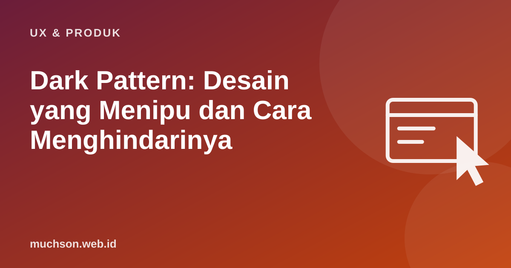

Beranda › Artikel › UX & Produk
UX & ProdukDark Pattern: Desain yang Menipu dan Cara Menghindarinya
Pernah berlangganan percobaan gratis lalu kesulitan membatalkannya? Atau melihat tulisan "tinggal 1 lagi!" yang tidak pernah berubah? Itu contoh dark pattern, istilah yang dicetuskan desainer Harry Brignull pada 2010 untuk desain yang sengaja menggiring pengguna melakukan sesuatu yang tidak mereka inginkan.

Seberapa umum?
Mathur dan rekan dari Princeton (2019) memindai sekitar 53 ribu halaman produk dari sekitar 11 ribu situs belanja. Mereka menemukan 1.818 contoh dark pattern di 1.254 situs (sekitar 11%), dan situs yang lebih populer justru lebih sering memakainya. Mereka juga menemukan pihak ketiga yang menjual dark pattern sebagai layanan siap pasang.
Jenis yang paling sering ditemui
Mengapa merugikan bisnis juga
- Konversi jangka pendek naik, tetapi kepercayaan dan retensi turun.
- Pelanggan yang merasa tertipu meninggalkan ulasan buruk dan bercerita ke orang lain.
- Biaya layanan pelanggan naik karena keluhan dan permintaan refund.
- Risiko hukum dan sanksi regulator.
Regulasi yang mulai tegas
Komisi Perdagangan Federal AS (FTC) menerbitkan laporan "Bringing Dark Patterns to Light" (2022) dan menindak beberapa perusahaan. Di Uni Eropa, Digital Services Act melarang platform online merancang antarmuka yang menipu atau memanipulasi pengguna. Di Indonesia, prinsip perlindungan konsumen dalam UU Perlindungan Konsumen dan UU Pelindungan Data Pribadi (terkait persetujuan pemrosesan data) relevan untuk praktik seperti biaya tersembunyi dan persetujuan yang tidak sah.
Tes sederhana: apakah Anda nyaman bila pengguna tahu persis mengapa desain ini dibuat seperti itu? Bila jawabannya tidak, kemungkinan besar itu dark pattern.
Tanya jawab
Apakah semua teknik persuasi termasuk dark pattern?
Bagaimana bila atasan meminta dark pattern?
Di mana melihat contoh lebih banyak?
Sumber dan bacaan lanjut
- Mathur et al. (2019): Dark Patterns at Scale, Findings from a Crawl of 11K Shopping Websites
- Deceptive Design (Harry Brignull)
- FTC (2022): Bringing Dark Patterns to Light